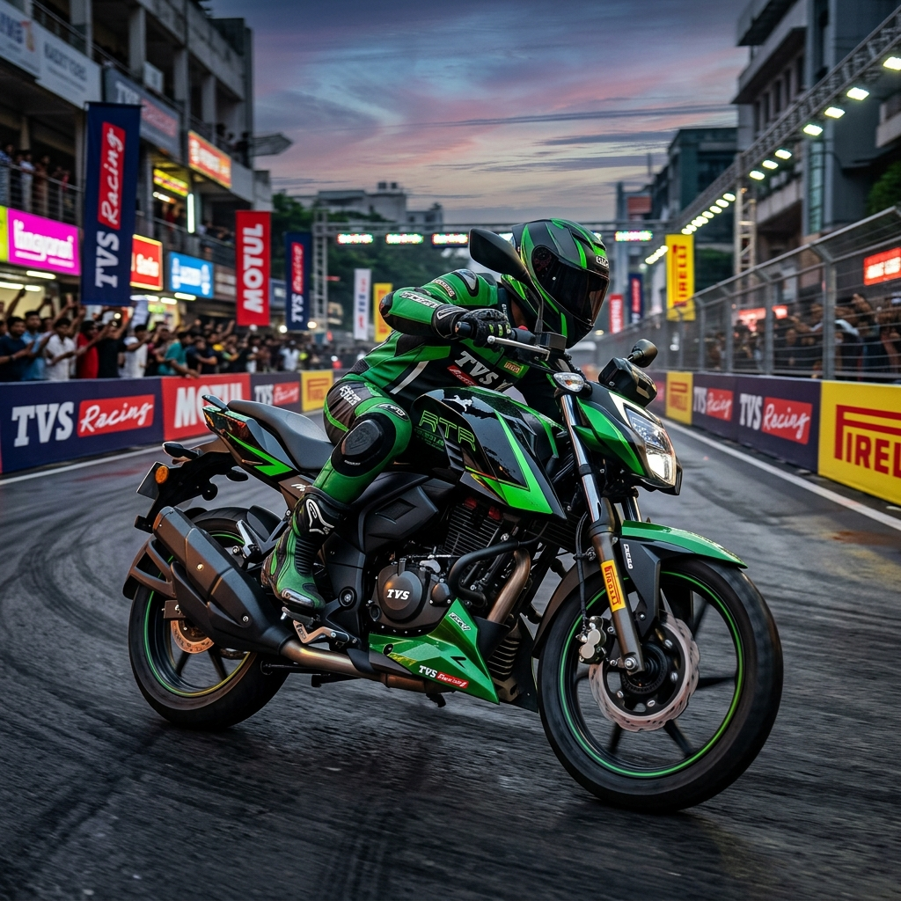

The Indian two-wheeler market is standing at the precipice of a massive green revolution. With the government’s aggressive push towards ethanol blending, manufacturers are racing to develop vehicles capable of running on alternative fuels. Among the frontrunners is TVS Motor Company, a brand with a strong racing pedigree and a history of technological innovation. The TVS Apache RTR 160 4V FFV (Flex Fuel Vehicle) concept is a testament to the brand’s commitment to sustainable performance mobility.
In this comprehensive guide, we will dive deep into everything you need to know about the TVS Apache RTR 160 4V FFV. From its engineering marvels and performance specifications to the expected price, mileage on ethanol, and what flex-fuel technology means for the average Indian rider, we have it all covered.
---
Table of Contents
1. Introduction to the TVS Apache RTR 160 4V FFV 2. What Does FFV (Flex Fuel Vehicle) Mean? 3. The Heart of the Machine: Engine & Performance Specifications 4. Design, Styling, and Ergonomics 5. Ride, Handling, and Suspension 6. Expected Mileage: Ethanol vs. Petrol 7. Expected Price in India and Launch Timeline 8. TVS and Ethanol: A Brief History 9. How the RTR 160 4V FFV Differs from the Standard Version 10. Environmental Impact and the Push for E85 in India 11. Pros and Cons of the Apache RTR 160 4V FFV 12. Frequently Asked Questions (FAQs) 13. Conclusion---

1. Introduction to the TVS Apache RTR 160 4V FFV
The TVS Apache series has long been the darling of Indian motorcycle enthusiasts who crave track-inspired performance in an accessible package. The standard Apache RTR 160 4V is already widely regarded as the benchmark in the 160cc segment, offering a sublime balance of power, agility, and technology.
Enter the TVS Apache RTR 160 4V FFV. First showcased as a concept to highlight TVS's readiness for the upcoming flex-fuel mandates, this motorcycle is designed to operate on a blend of petrol and ethanol. While the Indian government is currently rolling out E20 (20% ethanol blend), flex-fuel vehicles (FFVs) are engineered to run on anywhere from 20% to 85% ethanol (E85), or even 100% ethanol in some cases.
The RTR 160 4V FFV proves that riders do not have to sacrifice the thrill of riding for the sake of the environment. By leveraging the high octane rating of ethanol, TVS aims to deliver a motorcycle that is not only greener but potentially punchier than its petrol-only counterpart.
---
2. What Does FFV (Flex Fuel Vehicle) Mean?
Before delving into the specifics of the motorcycle, it is crucial to understand the underlying technology.
Flex Fuel Vehicles (FFVs) have an internal combustion engine capable of operating on a mixture of gasoline (petrol) and a blended alcohol fuel, typically ethanol. In India, the focus is heavily on ethanol derived from sugarcane and agricultural waste.
Unlike standard vehicles that can only handle lower blends like E10 or E20 without facing engine damage, true FFVs are equipped with specialized components: - Corrosion-Resistant Fuel Lines: Ethanol is highly corrosive to certain plastics and rubbers. FFVs use upgraded materials in their fuel delivery systems. - Advanced ECU (Engine Control Unit): An FFV must be able to detect the ratio of ethanol to petrol in the tank in real-time. The ECU then adjusts the ignition timing and fuel injection accordingly to ensure optimal combustion. - Modified Fuel Injectors: Ethanol has a lower energy density than petrol, meaning more fuel must be injected to achieve the same power output. Larger or more efficient injectors are often used.
For more information on how ethanol impacts engine health, check out our comprehensive guide on E85 fuel for Indian motorcycles.
---
3. The Heart of the Machine: Engine & Performance Specifications
The standard TVS Apache RTR 160 4V is powered by a gem of an engine, and the FFV concept retains this core architecture with critical modifications for ethanol compatibility.
Engine Specifications
| Parameter | Specification | | :--- | :--- | | Engine Type | SI, 4-stroke, Oil-Cooled, SOHC, Fuel Injected | | Displacement | 159.7 cc | | Valves per Cylinder | 4 | | Max Power (Expected) | 17.55 PS @ 9,250 rpm (varies slightly on ethanol) | | Max Torque (Expected) | 14.73 Nm @ 7,250 rpm | | Fuel System | Bosch Closed Loop Fuel Injection (TVS RT-Fi) | | Cooling System | Oil Cooled with Ram Air Assist | | Starting System | Electric Start | | Transmission | 5-speed Constant Mesh | | Clutch | Wet Multi-Plate Slipper Clutch |
Performance on Ethanol
Ethanol has a higher octane rating (over 100) compared to standard petrol (91-95). This means the engine can potentially be tuned to run at a higher compression ratio or more aggressive ignition timing without suffering from engine knock. While the peak power output figures of the FFV concept are expected to mirror the standard model closely, the power delivery might feel different.Riders can expect a slightly crisper throttle response thanks to the TVS Race-Tuned Fuel Injection (RT-Fi) system recalibrated for ethanol. The presence of a slipper clutch ensures seamless downshifts, maintaining the sporty character the Apache is known for.
---
4. Design, Styling, and Ergonomics
TVS has always excelled in making motorcycles that look fast even when standing still. The Apache RTR 160 4V FFV concept carries forward the aggressive "Draken" inspired styling of the current lineup.
Key Design Highlights:
- Aggressive LED Headlamp: The signature claw-styled LED daytime running lights (DRLs) and the all-LED headlamp offer excellent illumination and a menacing front fascia. - Aerodynamic Fuel Tank: The muscular fuel tank, adorned with the iconic TVS racing horse logo, features aerodynamic cowls that not only look good but help channel air to the oil cooler. - Distinctive Badging: To set it apart from the standard model, the FFV version is expected to feature unique green graphics and prominent "Flex Fuel" or "E85" badging on the tank and side panels. - Digital Instrument Cluster: The fully digital LCD instrument cluster features TVS SmartXonnect, offering Bluetooth connectivity, turn-by-turn navigation, call/SMS alerts, and race analytics like top speed recorder and 0-60 km/h timer.Ergonomics
The Apache RTR 160 4V strikes a beautiful balance between a sporty forward-leaning posture and everyday commuting comfort. The single-piece seat is well-padded, and the rear-set footpegs offer a commanding riding position without putting excessive strain on the wrists.---
5. Ride, Handling, and Suspension
TVS's racing DNA is most evident in the handling department. The RTR 160 4V is widely considered to have the best chassis dynamics in its class.
- Frame: The motorcycle is built around a double-cradle Split Synchro Stiff frame that offers immense torsional rigidity. This translates to absolute confidence when cornering. - Suspension: The front features telescopic forks, while the rear is equipped with a Showa-tuned monoshock. This setup provides a plush ride over bad roads while remaining composed during aggressive riding. - Braking: Stopping power comes from a 270mm petal disc at the front and a 200mm petal disc at the rear. The bike is equipped with Super-Moto ABS (Single Channel) or Dual-Channel ABS depending on the variant. - Tyres: The bike rides on 90/90-17 front and 130/70-17 rear tubeless tyres, crafted from a special compound for superior grip.
---
6. Expected Mileage: Ethanol vs. Petrol
One of the most critical aspects for Indian consumers is mileage (fuel efficiency). This is where flex-fuel vehicles present a unique scenario.
Ethanol contains roughly 30% less energy per unit volume than petrol. Therefore, to travel the same distance, an engine must burn more ethanol than petrol.
Mileage Estimates:
- On 100% Petrol (Standard): ~ 45 - 48 kmpl - On E20 (20% Ethanol): ~ 42 - 45 kmpl - On E85 (85% Ethanol): ~ 30 - 35 kmplWhile the mileage drops significantly on higher ethanol blends like E85, the cost economics depend entirely on the retail price of ethanol. If the government prices E85 significantly cheaper than standard petrol (as seen in countries like Brazil), the running cost per kilometer could be identical or even lower than a petrol-only vehicle.
Furthermore, ethanol burns much cleaner, resulting in significantly fewer carbon monoxide and hydrocarbon emissions.
---
7. Expected Price in India and Launch Timeline
As of now, the TVS Apache RTR 160 4V FFV remains a technology demonstrator. However, with the Indian government mandating E20 compliance and pushing for flex-fuel ecosystems, a commercial launch is highly anticipated in the coming years.
Expected Price
The flex-fuel technology requires specialized components—such as a more sophisticated ECU, ethanol sensor, and corrosion-resistant materials. Therefore, the FFV variant is expected to carry a premium over the standard petrol model.- Current Standard RTR 160 4V Price: ₹1.25 Lakh - ₹1.40 Lakh (Ex-Showroom) - Expected RTR 160 4V FFV Price: ₹1.35 Lakh - ₹1.50 Lakh (Ex-Showroom)
Launch Timeline
While TVS has not announced an official launch date, industry experts predict that true flex-fuel two-wheelers could start hitting Indian showrooms in late 2026 or 2027, aligning with the broader availability of E85 fuel stations across major cities.---
8. TVS and Ethanol: A Brief History
TVS is no stranger to ethanol technology. In 2019, TVS created history by launching India's first ethanol-powered motorcycle, the TVS Apache RTR 200 Fi E100.
The E100 was designed to run on 100% ethanol. It was launched primarily as a pilot project in sugarcane-producing states like Maharashtra, Uttar Pradesh, and Karnataka. The launch of the E100 demonstrated TVS's engineering prowess and their proactive approach to alternative fuels long before government mandates were put in place.
The RTR 160 4V FFV concept is a logical progression of the E100 project, bringing flex-fuel capability to the high-volume 160cc commuter-sport segment.
---
9. How the RTR 160 4V FFV Differs from the Standard Version
For the layperson, the FFV and the standard petrol Apache RTR 160 4V look identical. However, under the skin, there are crucial differences:
| Feature | Standard Apache RTR 160 4V | Apache RTR 160 4V FFV | | :--- | :--- | :--- | | Fuel Compatibility | Up to E20 (Petrol with 20% Ethanol) | Petrol, E20, E85, up to E100 | | Fuel Lines & Tank | Standard materials | Anti-corrosive, ethanol-safe materials | | Engine Mapping (ECU) | Fixed maps for petrol | Dynamic mapping with ethanol sensor | | Fuel Injectors | Standard flow rate | Higher flow rate to compensate for ethanol | | Emissions | BS6 Phase 2 limits | Significantly lower CO and HC emissions | | Visual Indicators | Standard Badging | Specific "Flex Fuel" / Green Badging |
---
10. Environmental Impact and the Push for E85 in India
India imports over 80% of its crude oil requirements. The shift towards ethanol—which is produced domestically from sugarcane molasses, damaged food grains, and agricultural waste—serves a dual purpose: 1. Economic Security: Drastically reduces the massive crude oil import bill. 2. Farmer Empowerment: Boosts the agricultural sector by creating a new revenue stream for farmers (the "Annadata to Urjadata" initiative). 3. Environmental Conservation: Ethanol is a renewable biofuel. Vehicles running on E85 emit far fewer greenhouse gases compared to pure petrol.
The Apache RTR 160 4V FFV aligns perfectly with this national vision. By adopting this technology, riders are actively participating in reducing their carbon footprint without giving up the joy of motorcycling.
---
11. Pros and Cons of the Apache RTR 160 4V FFV
Pros:
- Eco-Friendly: Drastically reduced tailpipe emissions. - Future-Proof: Ready for upcoming fuel policy shifts and widespread E85 availability. - Performance: Retains the class-leading handling and acceleration of the standard Apache. - Engine Health: Ethanol burns cooler, which can potentially aid in engine thermal management during spirited riding. - National Contribution: Supports domestic agriculture and reduces reliance on imported oil.Cons:
- Lower Mileage: The lower energy density of ethanol means more frequent trips to the fuel pump. - Fuel Availability: Currently, E85 dispensing stations are extremely rare in India. - Initial Cost: The specialized flex-fuel components will make the bike slightly more expensive than its petrol counterpart. - Cold Starts: High ethanol blends can sometimes cause cold start issues in extreme winter conditions, though advanced ECUs largely mitigate this.---
12. Frequently Asked Questions (FAQs)
Q1: Is the TVS Apache RTR 160 4V FFV currently available for sale in India? A1: No, the FFV model is currently a concept/prototype showcased by TVS to demonstrate their flex-fuel readiness. The standard petrol version is available in showrooms.
Q2: Can I put E85 fuel in my regular Apache RTR 160 4V? A2: No. The standard Apache RTR 160 4V (BS6 Phase 2) is compatible with blends up to E20. Using E85 in a standard engine will cause severe corrosion to fuel lines and damage the engine internals over time.
Q3: Will the top speed of the flex-fuel Apache be higher? A3: While ethanol has a higher octane rating, the power output is generally tuned to remain similar to the petrol version. Top speed is expected to be nearly identical, around 114-115 km/h.
Q4: Will the FFV model give better mileage? A4: No, ethanol has a lower energy density than petrol. When running on E85, the mileage will drop by roughly 25-30% compared to pure petrol.
Q5: Will the maintenance cost of the FFV model be higher? A5: Routine maintenance (oil changes, chain lubrication, brake pads) will be the same. However, components like the ethanol sensor or specialized fuel pump could be more expensive to replace if they fail.
Q6: What happens if I can't find E85 fuel? Can I use normal petrol? A6: Yes! That is the beauty of a Flex Fuel Vehicle. You can fill the tank with 100% regular petrol, E20, E85, or any combination in between. The ECU will automatically adjust.
Q7: Is TVS the only company making flex-fuel bikes in India? A7: No, other major players like Honda, Bajaj, and Hero MotoCorp are also actively developing and showcasing flex-fuel prototypes as part of the industry-wide shift.
Q8: Does ethanol fuel cause rust in the fuel tank? A8: Ethanol is hygroscopic (absorbs moisture from the air), which can lead to rust in standard metal tanks. However, FFVs use specially treated tanks or polymer materials to prevent this corrosion.
Q9: When can we expect E85 pumps to become common in India? A9: The government has successfully rolled out E20 across thousands of pumps. E85 availability is expected to scale gradually over the next 3 to 5 years.
Q10: Is the Apache RTR 200 Fi E100 the same as the 160 4V FFV? A10: No. The Apache 200 E100 was launched in 2019 specifically to run on 100% ethanol. The 160 4V FFV is a more recent concept designed as a "flex-fuel" vehicle, meaning it can handle varying blends of petrol and ethanol seamlessly.
---
13. Conclusion
The TVS Apache RTR 160 4V FFV is a brilliant glimpse into the near future of Indian motorcycling. TVS has managed to take one of the most loved, dynamically sorted motorcycles in the country and adapt it for a greener, more sustainable tomorrow.
While the mass-market availability of both the motorcycle and E85 fuel is still on the horizon, the prototype proves that riders won't have to compromise on speed, style, or handling to be environmentally responsible. As India accelerates its ethanol blending program, vehicles like the Apache RTR 160 4V FFV will be leading the charge, proving that performance and sustainability can indeed ride together.
For more updates on flex-fuel motorcycles and ethanol policies in India, stay tuned to e85india.com.
--- Disclaimer: The specifications and details mentioned in this article are based on TVS concepts, prototypes, and industry expectations. Actual production specs and prices may vary upon official launch.